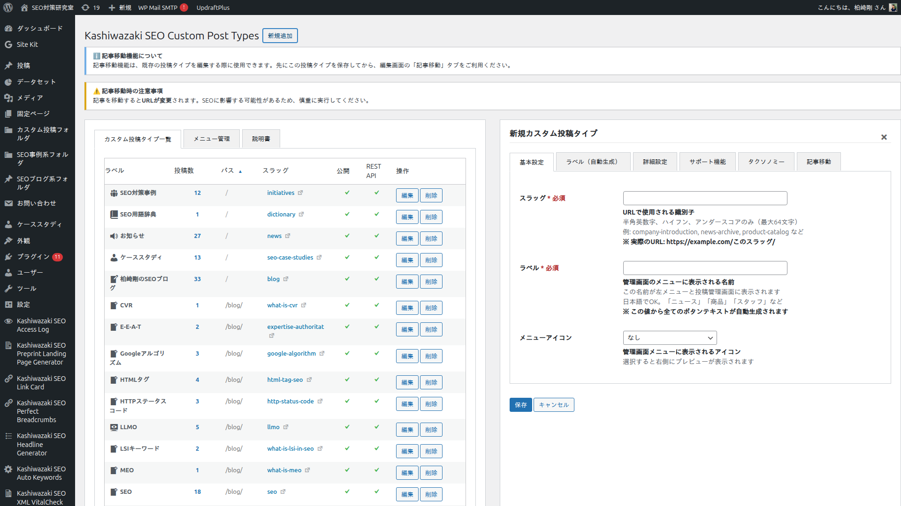

投稿タイプ管理
カスタム投稿タイプの作成・編集・削除、投稿タイプ間の記事移行、メニュー割り当て、カテゴリアイコン設定など、本プラグインの主要機能について詳しく説明します。
カスタム投稿タイプの作成
GUIからカスタム投稿タイプを作成できます。コードの記述は一切不要です。

管理画面の Custom Post Types ページを開き、新規投稿タイプを追加 ボタンをクリックします。
投稿タイプの基本情報を入力します。
| 項目 | 説明 |
|---|---|
| 投稿タイプスラッグ | URLに使用される英数字の識別子（例: news, product） |
| ラベル（単数形/複数形） | 管理画面に表示される名称 |
| 公開設定 | フロントエンドでの表示・検索結果への含有設定 |
| 階層構造 | 固定ページのような親子関係を有効にするか |
| サポート機能 | タイトル、エディタ、サムネイル等の有効化 |
保存 ボタンをクリックすると、投稿タイプが登録され、リライトルールが自動的に更新されます。
ヒント
投稿タイプスラッグは一度設定すると変更が困難です。サイトのURL構造を事前に設計し、適切なスラッグを選択してください。適切なURL構造はSEOにおけるクローラビリティの向上に直結します。
投稿タイプの編集・削除
作成済みの投稿タイプは、一覧画面から編集・削除できます。
投稿タイプ一覧から、編集したい投稿タイプの 編集 リンクをクリックします。
ラベル、公開設定、サポート機能などを変更し、保存 をクリックします。変更後、リライトルールは自動で再生成されます。
注意
投稿タイプを削除しても、その投稿タイプに属する投稿データはデータベースに残ります。必要に応じて、削除前に記事移行機能で別の投稿タイプに記事を移行してください。
親子階層管理
投稿タイプに親子関係（階層構造）を設定することで、論理的なサイトアーキテクチャを構築できます。
投稿タイプの作成・編集画面で、親投稿タイプ を選択します。
親子関係を設定すると、URLが自動的に階層構造を反映します（例: /parent-type/child-type/post-slug/）。リライトルールも自動で調整されます。
ヒント
階層型投稿タイプは、検索エンジンがサイトのコンテンツ構造を理解する助けになります。関連するコンテンツを同じ階層に配置することで、トピックの関連性をクローラーに伝えることができます。
投稿タイプ間の記事移行
投稿タイプ間で記事を一括移行できます。スラッグとタクソノミーの関連付けを維持したまま安全に移動します。
管理画面の 記事移行 タブを開きます。
移行元 の投稿タイプと 移行先 の投稿タイプを選択します。
移行対象の記事を確認し、移行を実行 ボタンをクリックします。
移行処理はAJAXで非同期に実行されます。処理中は進捗状況が表示されます。
メモ
記事移行時、各記事のスラッグは維持されます。旧URLからのリダイレクトが必要な場合は、別途リダイレクトプラグインで対応してください。リライトルール管理により、移行後の新URL構造での404エラーは自動的に防止されます。
メニュー割り当て管理
カスタム投稿タイプごとに、WordPress管理画面のメニュー表示位置を管理できます。
管理画面の メニュー管理 タブを開きます。
各投稿タイプに対して、管理画面メニューでの親メニュー項目を選択します。
設定を保存すると、管理画面のメニュー構造が即座に反映されます。
カテゴリアイコン設定
カテゴリごとにアイコンを設定し、管理画面での視認性を向上させることができます。
管理画面の カテゴリ管理 タブを開きます。
アイコンを設定したいカテゴリを選択し、利用可能なアイコン一覧から選択します。
保存 をクリックすると、管理画面のカテゴリ一覧にアイコンが表示されます。
AJAXハンドラー一覧
本プラグインでは、20種類のAJAXハンドラーを使用してすべての管理操作を非同期で処理しています。すべてのハンドラーはnonce検証とmanage_options権限チェックを行います。
| 操作カテゴリ | 内容 |
|---|---|
| 投稿タイプ管理 | 作成・編集・削除・一覧取得・詳細取得 |
| 記事移行 | 移行元/先の選択・記事一覧取得・移行実行・進捗確認 |
| メニュー管理 | メニュー割り当ての取得・更新 |
| カテゴリ管理 | カテゴリ一覧取得・アイコン設定・アイコン削除 |
| パーマリンク管理 | リライトルール更新・パーマリンクバリデーション |